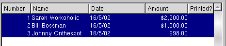
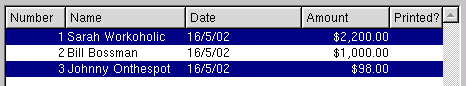

| Table of Contents | Quasar Commands | Up: Cheques | Previous: Write Cheques | Next: Reconcile List |
The "Print Cheques" window is used to physically print cheques that have been created in either the write cheques window or the vendor payments window.
The chequing account upon which the cheque will be drawn. Only cheques that have been created using the chequing account entered will display on the screen
Select the type of form on which the cheques will be printed.
There are several ways in which you can select the cheques that you wish to print.
The range of cheques that you selected will be highlighted.

To select a group of random cheques, hold down the ctrl key while using
the left button of your mouse to click on each cheque the you wish to
print. The cheques you have selected will be highlighted.

Toggle on or off. Toggle on to display all cheques including those that were already printed. Toggle off to display only cheques that have not yet been printed.
| Table of Contents | Quasar Commands | Up: Cheques | Previous: Write Cheques | Next: Reconcile List |